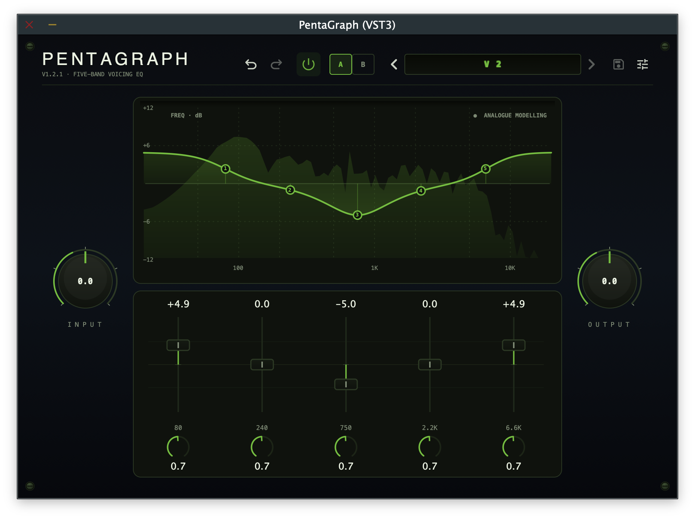

PentaGraph
A 5-band graphic EQ plugin: a digital recreation of the EQ circuit found in guitar amplifiers and recreated in standalone pedals with op-amp gyrator circuits. Calibrated from real hardware measurements.
- Five fixed bands: 80 Hz · 240 Hz · 750 Hz · 2.2 kHz · 6.6 kHz
- ±12 dB boost/cut per band with input & output trim (unity detent)
- Two modes: Nominal (clean textbook EQ) and Analog (hardware-calibrated analog modelling with ADAA saturation)
- 15 factory presets, including lead, rhythm, clean and jazz settings
- VST3, AU & Standalone on macOS · VST3 on Windows

Overview
PentaGraph is a digital recreation of the 5-band graphic EQ circuit found in guitar amplifiers and recreated in standalone pedals with op-amp gyrator circuits. It reproduces the circuit's topology, band interaction and saturation behaviour instead of approximating the frequencies with a generic parametric EQ.
Its behaviour includes band independence, the V-curve scoop, gain-dependent Q narrowing and op-amp saturation when pushed hard.
PentaGraph operates in two modes, selectable via the Analog Modeling toggle in the settings (cog) menu:
- Nominal mode (the default) uses the pedal's published frequency labels (80 / 240 / 750 / 2.2k / 6.6k) and clean textbook filtering with no saturation. Each band's Q is adjustable (range 0.3-6.0, default 0.667), from broad and musical to narrow and notch-like. Use it for general EQ work.
- Analog mode uses studio-calibrated centre frequencies, calibrated per-band Q values, nonlinear gain mapping, and dual-stage ADAA saturation (wrapped in 2× IIR oversampling) to reproduce the measured response of the hardware. The user Q controls are bypassed in this mode in favour of the measured values.
Analog Modeling is a fully automatable parameter and is saved and restored with presets, so factory and user presets can each specify which mode to use.
Interface
The workbench-style faceplate presents five band sliders, a real-time frequency-response curve showing the composite EQ shape with a live spectrum analyser drawn behind it, and IO ring meters that animate with the audio thread.
Each band exposes a compact Q slider beneath its gain fader; you can also adjust Q by mouse-wheeling directly over the band's point on the curve display, or via host automation. The preset bar groups settings, including the Analog Modeling toggle, into a sectioned popup, and band points on the curve ease over 120 ms on hover and when active.
Features
- The five bands are summed in parallel. Each band filters the dry input independently and the contributions are added together, as in the analog circuit's op-amp summing stage. This keeps the bands independent, which cascading five peaking biquads in series does not.
- Two modes switch from the settings menu. Nominal is clean, textbook EQ with published frequencies and adjustable per-band Q. Analog uses hardware-calibrated frequencies, calibrated per-band Q, nonlinear gain mapping and analog saturation.
- In Nominal mode each band has its own Q control (0.3-6.0, default 0.667), set with the slider under each fader, by mouse-wheel over the band's point on the curve, or via host automation.
- All centre frequencies, Q values and gain mappings were derived from studio measurements of a real 5-band gyrator EQ pedal (48 kHz / 24-bit WAV via MOTU interface, spectral division with 1/6-octave smoothing). The measurements showed that Band 1 is a low shelf and Band 5 is a high shelf, with Bands 2-4 as wide peaking filters.
- In Analog mode the effective Q narrows at extreme boost or cut settings, as in the analog circuit. At ±12 dB the effective Q is ~1.36× the base Q.
- Analog mode uses dual-stage ADAA saturation with 2× oversampling. Per-band saturation models per-gyrator op-amp headroom, while post-summing saturation models the summing amplifier. Both use first-order Antiderivative Anti-Aliasing with
tanhsoft clipping, wrapped in 2× IIR oversampling (~43 dB image rejection, ~41 dB reduction in naive-tanhaliasing) with zero reported latency. Per-band drive is envelope-modulated (attack ~1 ms, release ~50 ms) and bypassed entirely at low gain settings. - Input and output trims run from −40 to +6 dB with a unity detent at 0 dB, so you can place PentaGraph like an FX-loop EQ. Raising the input trim pushes the saturation stages for more analog character.
- The 15 factory presets include Classic V, Djent Focus, Jazz Roll-Off and Fuzz Friend. User presets can be saved, renamed and deleted.
- The audio thread makes no heap allocations, parameter smoothing (15-20 ms) prevents zipper noise, and the plugin is stable across 44.1-192 kHz sample rates, with no denormals or NaN propagation.
- PentaGraph adds no latency to your signal chain, so it can be used for tracking, mixing and live work.
Controls
| Control | Range | Description |
|---|---|---|
| 80 Hz | ±12 dB | Low-end thump and sub control |
| 240 Hz | ±12 dB | Low-mid body and warmth |
| 750 Hz | ±12 dB | Mid focus: the classic scoop frequency |
| 2.2 kHz | ±12 dB | Upper-mid attack and presence |
| 6.6 kHz | ±12 dB | Presence and air |
| Per-band Q (×5) | 0.3 - 6.0 | Bandwidth control per band (Nominal mode only); default 0.667. Editable via the slider under each fader, mouse-wheel over the curve point, or host automation. |
| Input Trim | −40 to +6 dB | Unity detent at 0 dB; drives saturation when raised |
| Output Trim | −40 to +6 dB | Unity detent at 0 dB; final level control |
| Analog Modeling | On / Off | Cog menu toggle; switches between Nominal and Analog modes. Fully automatable and saved with presets. |
| Bypass | On / Off | Power icon in top nav bar; bypasses EQ (trims remain active) |
Double-click any gain or trim control to reset it to 0 dB. Double-click a Q control to reset it to 0.667.
Factory presets
PentaGraph ships with 15 factory presets. All presets leave Input Trim and Output Trim at 0 dB.
| Preset | Analog | Description |
|---|---|---|
| Init | Off | Flat: all bands at 0 dB |
| Classic V | On | The V-curve with analog modeling: calibrated frequencies, saturation, and Q narrowing |
| Lead | On | Upper-mid and presence emphasis with analog modeling for lead tones |
| Solo Push | Off | Mid-forward bump for solos that need to cut through a mix |
| Tight Rhythm | Off | Scooped but controlled: tight palm mutes and modern metal rhythm |
| Chunk Rhythm | Off | Mild V-curve with low-end weight for chunky rhythm tones |
| Djent Focus | Off | Aggressive low cut with upper-mid attack for modern djent/prog |
| Bass Contour | Off | Enhanced low end with gentle mid scoop for bass guitar or low tunings |
| Fuzz Friend | Off | Tames low-end mud and adds mid focus for pairing with fuzz pedals |
| Warm Clean | Off | Rounded highs and a touch of low-mid warmth for clean tones |
| Sparkle Clean | Off | Bright and airy clean tone with upper-mid shimmer |
| Acoustic Strum | Off | Reduced boominess with presence lift for acoustic or piezo pickups |
| Jazz Roll-Off | Off | Low and high rolloff with mid focus for warm jazz voicings |
| Fizz Tamer | Off | Subtle presence cut to tame harsh or fizzy high-gain amp sims |
| Bedroom Loudness | Off | Fletcher-Munson-inspired boost for full-sounding low-volume playing |
Plugin formats and compatibility
| Format | macOS | Windows |
|---|---|---|
| VST3 | Yes | Yes |
| AU (Audio Unit) | Yes | No |
| Standalone | Yes | No |
Works in any DAW that hosts VST3 or AU plug-ins, such as Logic Pro, Ableton Live, Reaper, Studio One, Cubase and FL Studio.
System requirements
macOS
- macOS 10.13 (High Sierra) or later
- 64-bit Intel or Apple Silicon (Universal Binary: runs natively on both)
- 4 GB RAM (8 GB recommended)
- ~50 MB free disk space
- Screen resolution of 1280 × 720 or higher
Windows
- Windows 10 (version 1903 / build 18362) or later, 64-bit only
- x86-64 (AMD64) processor; ARM64 via emulation
- 4 GB RAM (8 GB recommended)
- ~50 MB free disk space
- Screen resolution of 1280 × 720 or higher
Installation
macOS
The macOS release is a signed and notarised .pkg installer.
- Download
PentaGraph-<version>.pkgfrom the release page. - Double-click the
.pkgfile to launch the installer. - Follow the on-screen prompts. You can choose which components to install:
- VST3 plug-in → installed to
/Library/Audio/Plug-Ins/VST3/ - AU plug-in → installed to
/Library/Audio/Plug-Ins/Components/ - Factory Presets → installed to
/Library/Application Support/Nullform Audio/PentaGraph/Presets/Factory/
- VST3 plug-in → installed to
- Open your DAW and scan for new plug-ins. PentaGraph will appear under Nullform Audio.
Windows
The Windows release is an Inno Setup .exe installer.
- Download
PentaGraph-<version>-Windows.exefrom the release page. - Run the installer. If Windows SmartScreen appears, click More info → Run anyway.
- Choose the installation type:
- Full installs the VST3 plug-in and factory presets
- VST3 only installs the plug-in without presets
- Custom lets you choose components individually
- Open your DAW and scan for new plug-ins.